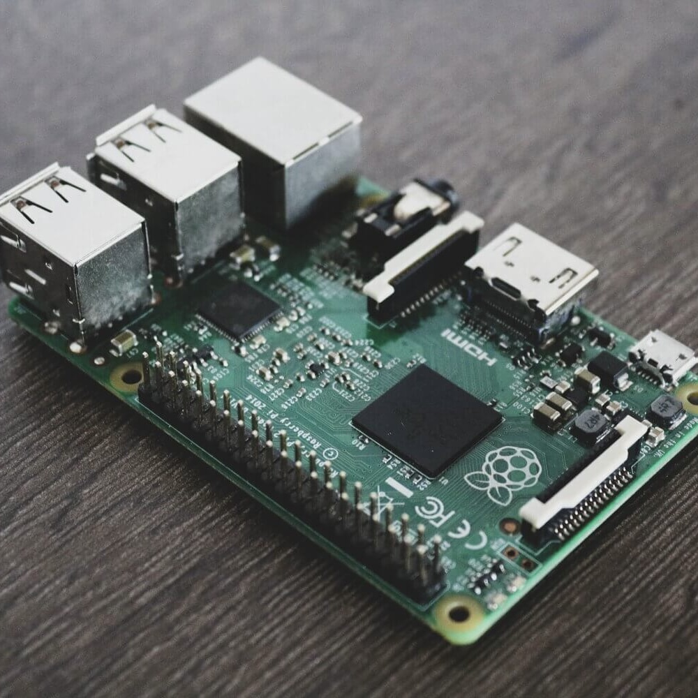
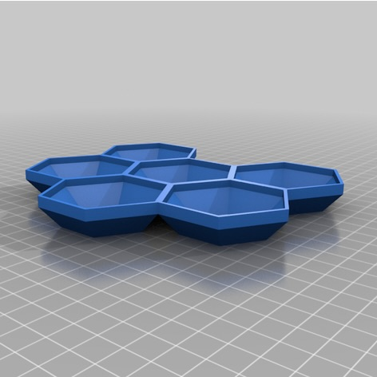
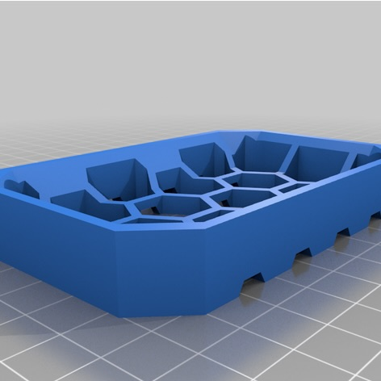

projects.
digital clock based on attiny85
WORK IN PROGRESS! Currently I am working on a clock that works with an attiny85 micro processor and a DS1307 RTC module. So far the attiny will display the time on a 4 digit 7 segment display and everything works great, however the communication between the attiny and the RTC module hasn't really worked yet. I dont have enough time currently to make it work properly, however as soon as I find time for it, I will fix the communication between the two chips.
hextrays
I have modeled these a while ago. We mostly use them for boardgames, just to organize everything on the table. But you could use them for basically anything (screws, bolts, small parts, desk organisation, etc). They are available in different layouts (or rather different amount of trays attached to each other).
Thingiverse soapholder
This is a simple soap holder I have modeled. simply put it in the bathroom onto the sink, and put your bar of soap onto it. That way it won't get all mushy.
Thingiverse 